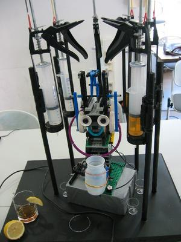

The Robotic Barkeep
|  |
Students Thomas Horf, Roland Roller, Sabrina Wilske have built a robotic
barkeep that will make a drink at your spoken request. As the robot makes
your drink it will tell you a joke or two.
This robotic barkeep is the product of the Talking Robots with LEGO MindStorms course offered by the Computational Linguistics and Phonetics department at the University des Saarlandes. The Talking Robots course is designed to help students explore robotics and computational linguistics by creating robots that can communicate. They use Lego Mindstorms, the Lejos Java virtual machine as well as the Java speech API to implement these robots. Other interesting robots are the blackjack dealer and the Logistics Robot They also have a Resource Page that serves as a great starting point for anyone thinking of building communicating robots.
|
Posted by Nik's blog on September 08, 2004 at 10:14 AM EDT #